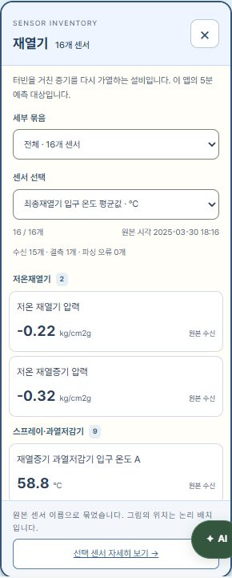
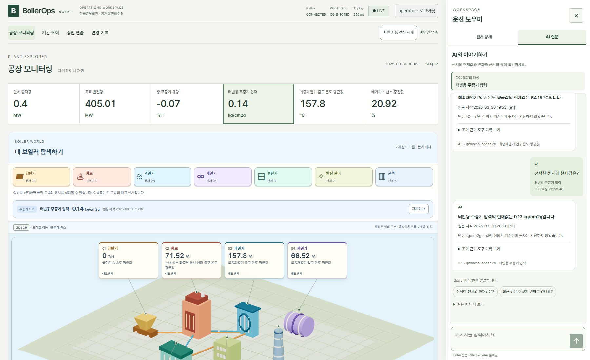
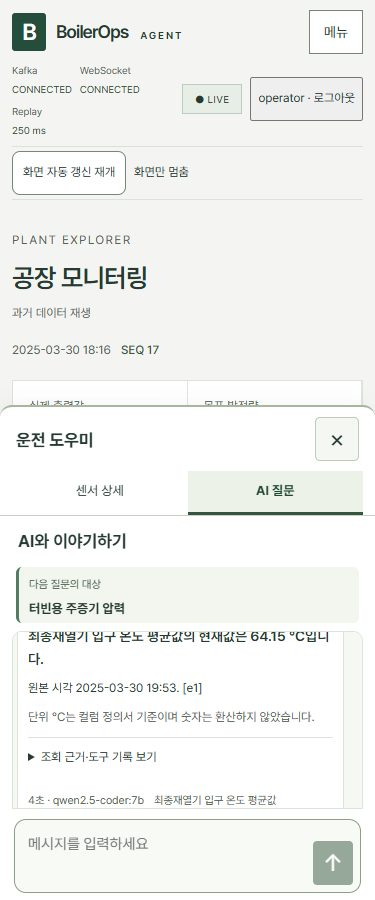
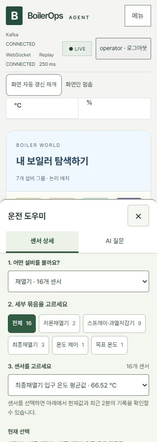
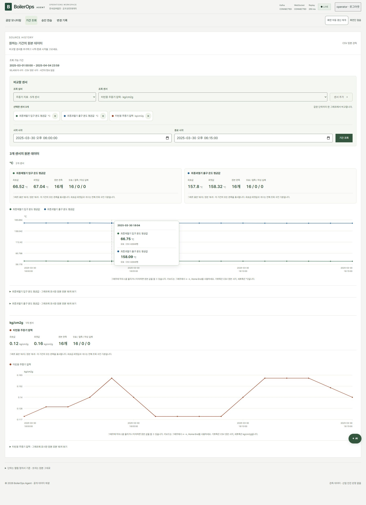
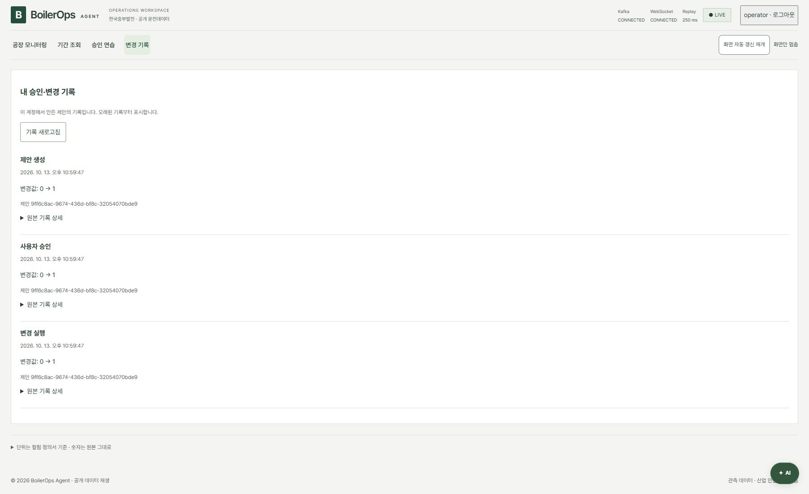

docs/results/phase7-select-chat-compare.md
Phase 7 — 선택 상자·고정 채팅·다중 센서 비교 기록
현재 상태: 개정·통합 검증 완료
2026년 10월 13일 추가 사용자 요청을 반영했다. 프론트엔드 빌드와 실제 CSV·Kafka·API·Ollama·Chromium 통합 검증 13개 항목이 통과했고 새 화면 캡처를 남겼다. 설명 페이지 브라우저 검수도 통과했다. 이전 phase7-game-chat-history.md, phase7-workspace.md와 기존 이미지는 이전 버전의 검증 기록으로 보존한다.
이번 변경 계약
| 사용자 요청 | 이번 동작 | |||
|---|---|---|---|---|
| 그래프에 마우스를 올려 상세 값 확인 | 원본 관측점의 시각·센서별 값·단위·품질·행 표시, 터치·방향키도 지원 | |||
| 조회 센서 디자인·여러 개 선택 | 설비·센서 선택 상자 → 추가·제외 칩, 같은 단위 색상 비교·다른 단위 그래프 분리 | |||
| 5분 예측을 공장 아래로 | 공장 모니터링에서 지도와 재열기 예측·시험 성능을 함께 표시 | |||
| 입력 검색 대신 선택 상자 | 오른쪽 설비 → 묶음 버튼 → 센서 선택, 설비 팝업 묶음·센서 선택과 상태 목록 | |||
| 전체 검색 링크·중복 목록 제거 | 전체 118개는 설비 분류로 접근, 검색 입력과 전체 118개에서 찾기 삭제 | |||
| 노란 기본 설명 상자 제거 | 기본 title 제거, 기능명·입력 레이블·접근 가능한 이름·키보드 포커스 유지 | |||
| 단위 안내를 하단으로 | 본문 가장 아래 안내로 이동 | |||
| 부드러운 패널 진입 | 짧은 열기 애니메이션, reduced motion에서는 움직임 축소 | |||
| 질문 버튼 위치·최근 값 휘발성 | 분류 제목 옆 질문 버튼, 센서 상세 추이·원본 표는 최신 원본 시각 기준 120초 | |||
| 챗봇처럼 고정된 질문·답변 | 고정 대화 영역 안 메시지·예시, 하단 입력·전송, Enter 전송·Shift+Enter 줄바꿈 | |||
| 승인 연습·변경 기록 메뉴 | 메인 메뉴 `공장 모니터링 | 기간 조회 | 승인 연습 | 변경 기록`, 오른쪽은 두 탭 |
원본 수치·음수·결측·단위를 바꾸지 않는다. 그림의 설비 배치와 움직임은 탐색용이며 실제 설치 위치·운전 상태·위험도·제어 효과를 뜻하지 않는다. AI 질문은 선택 센서의 독립 조회이며 화면에 쌓인 이전 대화를 서버가 자동으로 기억하지 않는다.
급탄기 데이터 감사: 0은 결측이 아니다
공개 원본 CSV 전체 50,400행, 원본 기간 2025-03-01 00:00~2025-04-04 23:59를 직접 순회했다. 급탄기 그룹의 13개 Tag는 모두 각 50,400개의 유효 수치를 갖고 있으며 결측과 파싱 실패는 각각 0개다. 13개 모두 과거에 0이 아닌 값이 있다.
| 원본 센서 | 단위 | 0인 행 | 0이 아닌 행 | 최솟값 | 최댓값 |
|---|---|---|---|---|---|
| 석탄 유량 제어 | % | 27,106 | 23,294 | 0 | 100 |
| 급탄기 A 요구값 | % | 27,690 | 22,710 | 0 | 92.03 |
| 급탄기 A 속도 평균값 | T/H | 27,695 | 22,705 | 0 | 43.23 |
| 급탄기 B 요구값 | % | 28,379 | 22,021 | 0 | 90.13 |
| 급탄기 B 속도 평균값 | T/H | 28,390 | 22,010 | 0 | 41.59 |
| 급탄기 C 요구값 | % | 27,312 | 23,088 | 0 | 92.35 |
| 급탄기 C 속도 평균값 | T/H | 27,318 | 23,082 | 0 | 42.64 |
| 급탄기 D 요구값 | % | 29,547 | 20,853 | 0 | 93.99 |
| 급탄기 D 속도 평균값 | T/H | 29,556 | 20,844 | 0 | 43.81 |
| 급탄기 E 요구값 | % | 27,852 | 22,548 | 0 | 91.12 |
| 급탄기 E 속도 평균값 | T/H | 27,858 | 22,542 | 0 | 42.08 |
| 급탄기 F 요구값 | % | 47,271 | 3,129 | 0 | 77.93 |
| 급탄기 F 속도 평균값 | T/H | 47,283 | 3,117 | 0 | 36.83 |
원본에서 마지막으로 0이 아닌 급탄기 그룹 값이 나오는 시각은 2025-03-28 11:14, 데이터 행 39,555다. 다음 시각인 2025-03-28 11:15부터 원본 끝까지 10,845행에서는 13개 모두 0이다. 여기서 데이터 행 번호는 헤더를 제외한 1부터의 번호다.
이번 통합 E2E는 예측 시험 구간 시작인 데이터 행 42,841(2025-03-30 18:00)부터 재생한다. 확인한 재생 범위 42,841~46,440(2025-04-02 05:59)의 3,600행에서도 13개 모두 원본 문자열 0, 유효 수치 0이었다. 따라서 사용자 화면의 급탄기 0은 해당 구간의 원본값이며, 센서 누락이나 결측의 임의 대체가 아니다.
정의서 CustomExcelView.xlsx의 행 6~18을 ZIP 내부 XML로 직접 읽어 원본 Tag, 식별자와 단위를 sensor_definitions.json·Registry와 대조했다. 석탄 유량 제어·급탄기 요구값은 %, 속도 평균값은 T/H다. 정의서 단위는 G열이 비어 있어 C열 설명에서 확인하며, 속도 평균값 원본 Tag의 끝 공백도 그대로 유지한다.
| 원본 파일 | SHA-256 |
|---|---|
| 운전데이터 CSV | fb995b76ab26e11f2c66226c9b2aa54388e0c04e41d6ce3a8106cef804cd2419 |
| CustomExcelView.xlsx | 7b5b753c4ea18c1cc9fd5487b29d91a0696d6d742c9995ccc5feb87adbfa36ce |
BoilerState.apply의 실제 파싱 경로에 재생 첫 행을 넣어 raw: "0", value: 0.0, quality: "valid", error: null을 확인했다. formatValue도 값이 null인 경우에만 —를 표시한다. 실제 설비가 정지했는지, 정비 중인지, 데이터 수집 방식 때문인지 등의 물리적 원인은 제공 자료로 확인되지 않는다. 이번 UI는 정상 수신한 0과 결측을 구분하고 다른 시각은 기간 조회에서 확인하도록 안내한다.
감사 아티팩트는 로컬 artifacts/e2e/feeder-data-audit.json이다. 파일별 해시·전체 기간·재생 범위·각 센서의 유효/결측/파싱 실패/0/비영값 수·최소/최대·정의서 행·식별자·최초/최후 비영값·실제 파싱 결과를 담았다. 공개 원본만 읽었으며 설정·인증 파일과 원본 데이터는 변경하지 않았다.
원본 기록과 기간 비교의 경계
- 센서 상세의 2분은 브라우저 벽시계 시간이 아니라 최신 원본 시각에서 120초다. 분 단위 원본의 경계값을 포함하면 3개 관측이 보일 수 있다. 서버 이력과 원본 CSV를 삭제하거나 AI 근거 전체를 2분으로 제한하는 변경이 아니다.
- 원본 기간 비교는 선택한 센서마다 기존 인증된 읽기 전용 range API를 호출한다. 동일 단위끼리만 수치 축을 공유하고 다른 단위는 나눈다. 각 센서의 실패·빈 결과·결측을 따로 표시한다.
- 긴 기간의 그래프는 센서별 최대 1,000개의 실제 원본 행을 균등 선택한다. 상세 값은 그 원본 관측점이며 전체 기간의 모든 분을 표시한다는 의미가 아니다. 임의 평균·보간·결측 대체를 만들지 않는다.
- 그래프의 선택 시각과 센서별 원본 시각을 구분한다. 단위 미확인 센서를 같은 축에 합치거나 온도·압력·유량을 임의 환산하지 않는다.
- 채팅 기록과 초안은 앱을 열어 둔 동안 보존한다. X/Escape 닫기에서 확인한 뒤 답변 기다림을 취소하더라도 기록·초안이 남는다. 페이지 새로고침·로그아웃은 초기화될 수 있으며 실제 안내와 일치해야 한다.
이번 검증 기록
실행 명령:
npm.cmd run build --prefix frontend
$env:E2E_WORKSPACE='1'
$env:E2E_API_PORT='8001'
$env:E2E_FRONTEND_PORT='4178'
node scripts/e2e.mjs최종 통합 실행은 2026-10-13 22:58:34~23:00:23 KST, 13개 항목 통과, run.json의 passed: true다. 실제 공개 CSV SHA-256은 위 감사 값과 일치한다. 별도 포트 8001·4178, 별도 Kafka 19092와 임시 계정을 사용했으며 실행 후 테스트 서버와 컨테이너를 정리했다. 사용자 실행 환경은 중단하지 않았다.
| 검증 | 실제 확인 결과 |
|---|---|
| TypeScript·Vite 빌드 | npm.cmd run build --prefix frontend 종료 코드 0, 74 modules |
| 원본 CSV·정의서 | 118개 단위·원본 Tag·해시 일치, 급탄기 전체 50,400행 감사 완료 |
| 설비 목록·선택 상자 | 7개 설비 팝업의 전체 센서·현재값·품질, 세부 묶음 select·센서 select, 오른쪽 분류로 118개 모두 접근 |
| 급탄기·2분 추이 | 급탄기 13개 valid 0·결측 0 안내, 원본 표 3행·시각 간격 120초·원본 0 보존 |
| AI 대화 | 실제 Ollama 두 답변·Trace 근거 대조, 질문 대상 고정·대화 누적·Enter 전송·Shift+Enter 줄바꿈 |
| 닫기·재시도 | 초안·대기 중 확인 취소/승인, X 닫기 취소·초안 보존, 늦은 응답 무시, 네트워크 오류·6분30초 타임아웃·재시도 |
| 승인 연습·변경 기록 | 메인 승인 연습에서 실제 모델 제안·명시적 승인·Simulator 실행·본인 Audit 확인 |
| 원본 기간 API | 인증 없는 요청 거부, Tag·역순 기간·시간대 오류 거부, raw·원본 시각·CSV 행 대조, 전체 50,400행의 실제 표본 120개와 양끝 보존 |
| 다중 센서·hover | 온도 2개는 °C 한 축, 압력은 별도 kg/cm2g 축; 마우스·Home·방향키·Escape, raw·원본 시각·CSV 행 대조; 개별 503 실패 시 나머지 결과 유지 |
| 기간 경계·배치 | 센서 미선택·빈 기간·목표값 결측, 급탄기 첫날 비영값 조회; 예측은 공장 아래, 단위 안내는 본문 끝 |
| 지도·동작 축소 | 7개 mesh·대표 이름표 선택, Space 이동·확대·170% 배치, reduced motion에서 장식과 패널 애니메이션 중단 |
| 화면·접근성 | 1800·1280·900·768·375·320px 및 높이 400px에서 입력·전송 노출; 이름·대비·가로 넘침·키보드·포커스 복귀 검사 |
| WebGL·인증 정보 | WebGL 손실 시 설비 탐색 유지, JSON·이력·로그에 임시 인증 정보 미포함 |
| 설명 페이지 | node scripts/review-ui.mjs 종료 코드 0, 링크·문서·새 8개 이미지·키보드·320/375/768/1440px 읽기 화면 확인, 2026-10-13 23:04:56 KST |
실제 모델은 qwen2.5-coder:7b이다. 재열기 답변은 “최종재열기 입구 온도 평균값의 현재값은 64.15 °C입니다.”, 압력 답변은 “터빈용 주증기 압력의 현재값은 0.13 kg/cm2g입니다.”였다. 재열기 질문의 브라우저 흐름과 응답·Trace 저장까지 4.97초가 걸렸으며, 각 답변은 그 조회의 원본 시각을 표시한다. 화면 자동 갱신을 멈춘 값과 별도 AI 조회의 시각이 같다고 가정하지 않는다.
첫 검증에서 선택 칩 제거 테스트의 변하는 인덱스를 수정했고, 지도 크기 변경 후 투영값을 기다리도록 조정했다. 추가 코드 검수에서 낮은 화면 높이의 채팅 클리핑과 취소된 추이 응답의 경계를 보완했다. 문서 촬영에서는 그래프가 화면 밖에 있던 캡처 크기를 조정한 뒤 최종 실행을 통과했다.
로컬 실행 아티팩트는 artifacts/e2e/phase7/workspace/의 run.json, input.json, agent-answer.json, chat-pressure-answer.json, simulator-audit.json, history-range.json, feeder-history.json, 화면별 접근성 JSON/YAML과 JPG다. 스크립트 5개의 node --check도 통과했다. 기존 전체 보안·Phase 7 실행을 이번에 다시 수행한 기록은 아니다.
설명 페이지 결과는 artifacts/e2e/phase7/ui-review/docs-result.json의 passed: true다. 안내 페이지에 이전 다섯 질문 검수 기록의 버튼을 복구했고, 새 결과서와 8개 이미지를 같은 페이지에서 확인했다.
실기기 터치·한글 IME와 실제 스크린리더 수동 검수는 수행하지 않았다. Chromium 접근성 트리와 브라우저 키보드 경로를 확인했다. Vite의 기존 큰 번들 경고는 남아 있으며 빌드는 성공했다. 실제 발전설비 운전 원인은 공개 원본으로 확인되지 않는다.
이번 화면 캡처







